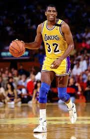
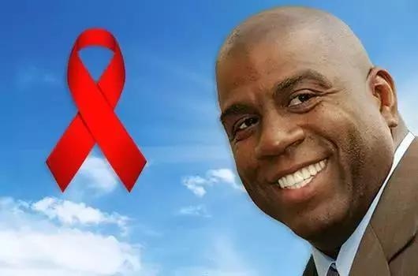

“我唯一想到艾滋病毒的时候就是我每天必须服药两次的时候。” ——约翰逊
篮球巨星的震撼声明
魔术师约翰逊，本名厄文·约翰逊，是NBA历史上最伟大的篮球运动员之一。然而，在1991年11月7日，约翰逊在一场全球直播的新闻发布会上震惊世界，宣布他因HIV病毒感染而即将退役。这一消息不仅震撼了体育界，更在全球范围内引发了对艾滋病的广泛关注。约翰逊的公开，标志着他从篮球巨星转变为艾滋病防治的公开斗士。
艾滋病的挑战与公众反应
在1990年代初，艾滋病仍被广泛误解和污名化，很多人认为这是一个只影响同性恋和吸毒者的疾病。魔术师约翰逊的HIV阳性诊断打破了这一刻板印象，显示任何人都可能成为这种病毒的受害者。尽管面临巨大的个人挑战，约翰逊选择公开自己的HIV状态，希望能减少公众对艾滋病的恐惧和偏见。
从篮球场到公众教育的舞台
约翰逊的退役并没有结束他的公众生活。相反，他利用自己的影响力，于1991年成立了“魔术师约翰逊基金会”，专注于艾滋病的预防和治疗教育。通过这个平台，他开始了一系列的公共健康倡导活动，致力于消除关于HIV/AIDS的误解和污名。
推动艾滋病教育和社区影响
在1992年，约翰逊重返篮球场，代表美国队参加了在巴塞罗那举行的奥运会，并帮助球队获得了金牌。这一壮举不仅标志着他个人的胜利，也向世界展示了HIV感染者可以维持正常和高效能的生活。此外，他在1992年通过基金会在洛杉矶和其他城市开展了多个针对少数族裔社区的HIV教育和测试项目，这些社区通常是HIV传播的高风险区域。
国际活动和扩展影响
到了2000年代初，约翰逊的活动范围已经扩展到全球。他的基金会与多个国际机构合作，在非洲等HIV高发地区推动预防和治疗项目。例如，他在2002年访问了南非，参与当地的艾滋病防治活动，这表明了他对全球抗艾事业的承诺。
科技进步与持续的公众倡导
随着抗逆转录病毒治疗（ART）的进步，约翰逊继续维持良好的健康状况。他利用自己的经历鼓励更多HIV感染者寻求及时的医疗帮助，并遵守治疗计划。他还定期在媒体和公共讲座中分享自己的故事，增强公众对艾滋病现状的认识和理解。
持续的影响与未来展望
至今，魔术师约翰逊仍然是艾滋病防治和健康教育的活跃倡导者。他的贡献在体育界和公共健康领域都留下了不可磨灭的痕迹。约翰逊的生活和事业不仅为HIV感染者提供了希望和激励，也促进了全球对艾滋病的科学理解和人文关怀。
结语
魔术师约翰逊通过自己的抗艾故事，改变了公众对HIV/AIDS的看法，推动了全球艾滋病的防治和研究工作。他的影响力证明了即使在面对生命中极大的挑战时，个人的力量也能引发广泛的社会变革。约翰逊的故事将继续激励着每一个面对健康挑战的人，展示出勇气、希望和无限可能。
